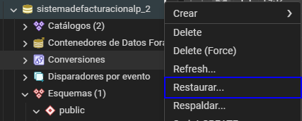
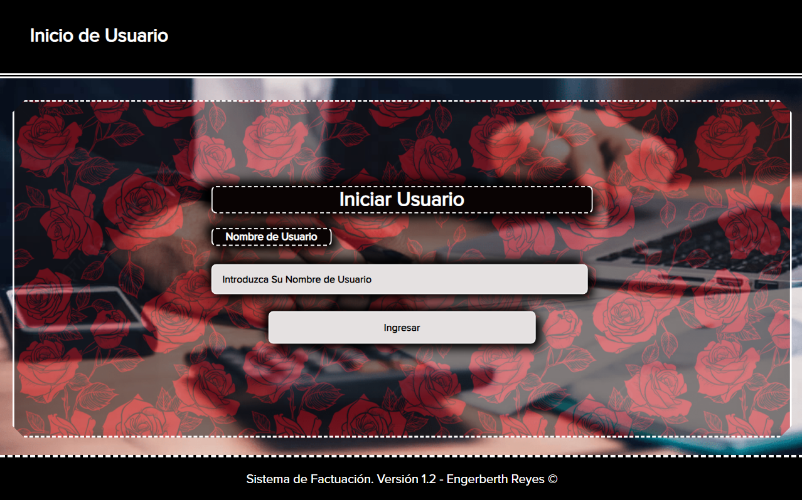
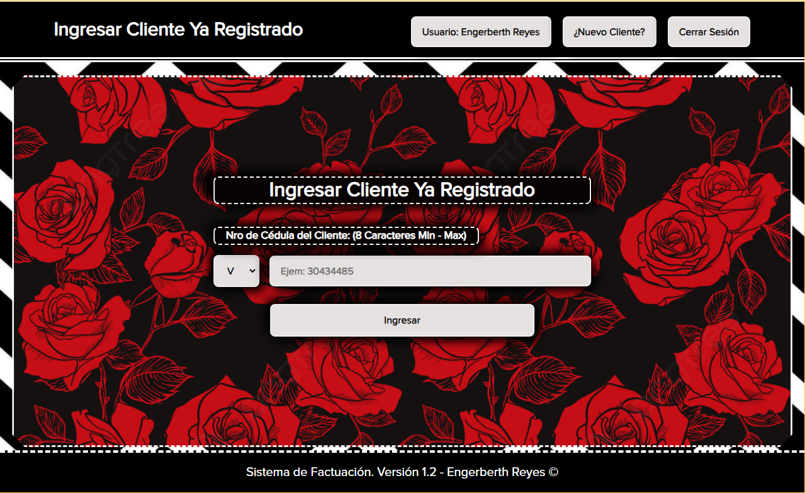
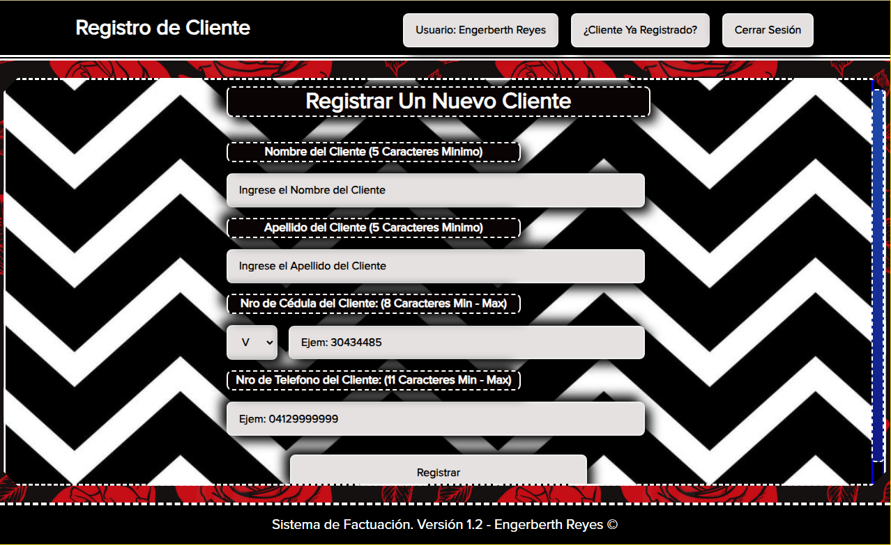

Instrucciones
Descargue e Instale Git
Haga clic en el siguiente enlace: Descargar Git
Clonar el Proyecto de Github
Para clonar mi Proyecto alojado en Github debe en su consola de Git Bash estando dentro de la carpeta debe escribir la Consola de Git Bash:
git clone
https://github.com/EngerberthReyes/Proyecto_ALP-365.git
Descargue e Instale Node.js
Para descargar Node.js, Haga clic en el siguiente enlace: Descargar Node.js Y seleccione la opción más conveniente para su sistema operativo.
Instalar Las Dependencias Necesarias Para el Proyecto
Para instalarlas, introduzca en su consola de Git Bash:
npm install
Esto dentro de la carpeta "Sistema_de_Facturacion"
Descargue e Instale PostgreSQL
Haga clic en el siguiente enlace: Descargar PostgreSQL
Descargue e Instale PgAdmin
Si PostgreSQL, por alguna razon no trae PgAdmin, Haga clic en el siguiente enlace: Descargar PgAdmin y seleccione la ultima versión
Base de Datos
Deberá Iniciar PgAdmin y Crear una Base de Datos, la cual deberá llamarse:
sistemadefacturacionalp_2
luego, deberá con el archivo que descargo respaldarlo en esa base de datos que acaba de crear
Paso 1
Paso 2

Inicie El Sistema de Facturación
Usando el comando en su consola de Git Bash dentro de la carpeta "nextjs"
npm run dev
Luego de iniciado el Servidor, ingrese a:
http://localhost:3000
Usando la Barra de Direcciones de su Navegador
Inicio de Usuario
Cliente Registrado
Registro de Cliente
Facturación